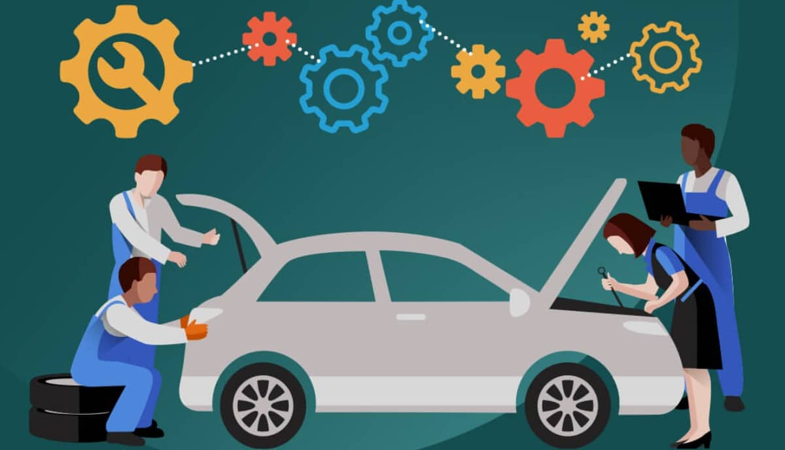

Guide to Car Maintenance
On a regular basis, you should bring your car in for a car tune up as well as replace consumable items such as motor oil, radiator coolant, brake fluid, power steering fluid, wiper blades and brake pads. Some vehicles also require mechanical maintenance like replacing spark plugs, drive belts, timing belts or chains, and air and fluid filters. Many people put a lot of wear and tear on their cars through normal activities, such as ferrying kids to school, commuting in heavy traffic, and towing trailers. Your vehicle will perform better, enjoy improved fuel economy and give you lots of trouble-free miles.
Keeping up to date with scheduled maintenance will help your car run more efficiently. You’ll avoid the potential for expensive damage that could cost a lot more down the road.
Checklist to Car Maintenance
When maintaining one's vehicle, one must be sure to make a checklist for things you need to check during a car inspection. That makes the process easy to follow and for you to not forget anything. Always think about BLOWGAS; brakes, lights, oil, water and gas. When it comes to maintaining cars, it’s always good to check these things; to keep checks on what things that are needed to be replaced and the things that are needed to keep tabs on.
- Rotate your tire every 5,000 miles to 10,000 miles
- Always check your oil and coolant levels at least once a week.
- Check your air filter from time to time
- Always check your tire pressure and tread depth
- Have your belts and hoses checked whilst you get your oil change,
- Check your car’s battery